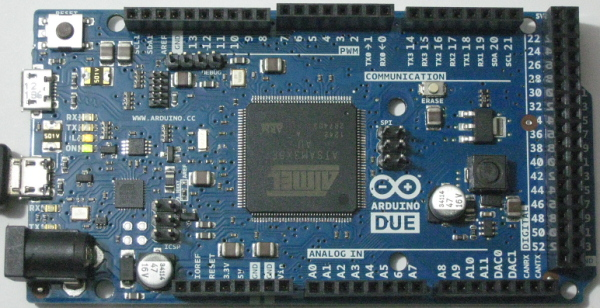

En los últimos años están apareciendo multitud de miniordenadores. Estos son algunos de ellos:
MiniPCs
Arduino
BeagleBone
CubieTruck
Raspberry Pi
ARDUINO
Arduino es una plataforma de hardware libre que ofrece microcontroladores en pequeñas placas.
